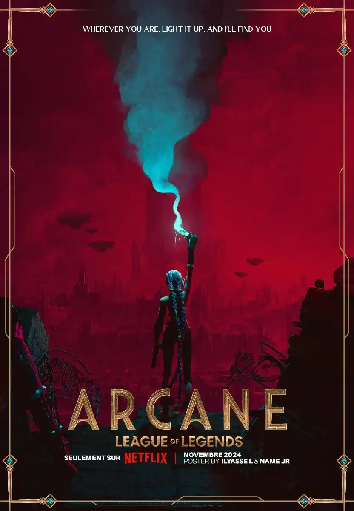

Résumé
Arcane est une série d'animation inspirée de l'univers de League of Legends, sortie en 2021. Elle suit deux sœurs, Vi et Jinx, entre les villes de Piltover et Zaun.

Arcane est une série d'animation inspirée de l'univers de League of Legends, sortie en 2021. Elle suit deux sœurs, Vi et Jinx, entre les villes de Piltover et Zaun.
IMDB a attribué à Arcane une note globale très positive.
| Score | 9 / 10 |
|---|---|
| Positive | 47 Reviews |
| Mixed | 3 Reviews |
| Negative | 1 Reviews |
9,0
Avis général des spectateurs
Une animation superbe et une histoire poignante, même pour ceux qui ne connaissent pas le jeu.
2
Notre avis
On résume l'histoire, une psycopathe avec un père loup-garou et une soeur emo bagarreuse elle même en couple avec une pseudo dictatrice, de l'autre côté on a un scientifique fou qui veut devenir prophète et un jeune homme ambitieux qui fait sa crise de la quarantaine. Aucun sens à l'histoire complètement incompréhensible et sans aucun lien entre elle.
Vous pouvez regarder Arcane sur les plateformes suivantes :